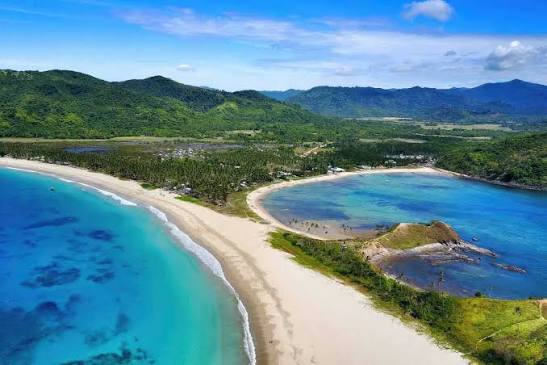

El Nido, Palawan, Philippines
Nacpan Beach is one of El Nido's most famous destinations, boasting over four kilometers of powdery white sand and crystal-clear waters. Whether you're swimming, sunbathing, or enjoying fresh local seafood, this beach offers the perfect blend of relaxation and adventure.
"A hidden paradise! The beach was peaceful, and the surfing experience was unforgettable. Highly recommended!" — Sarah M.
| Package | Price |
|---|---|
| Day Tour | ₱2,299 |
| Adventure Package | ₱4,999 |